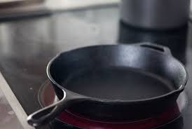
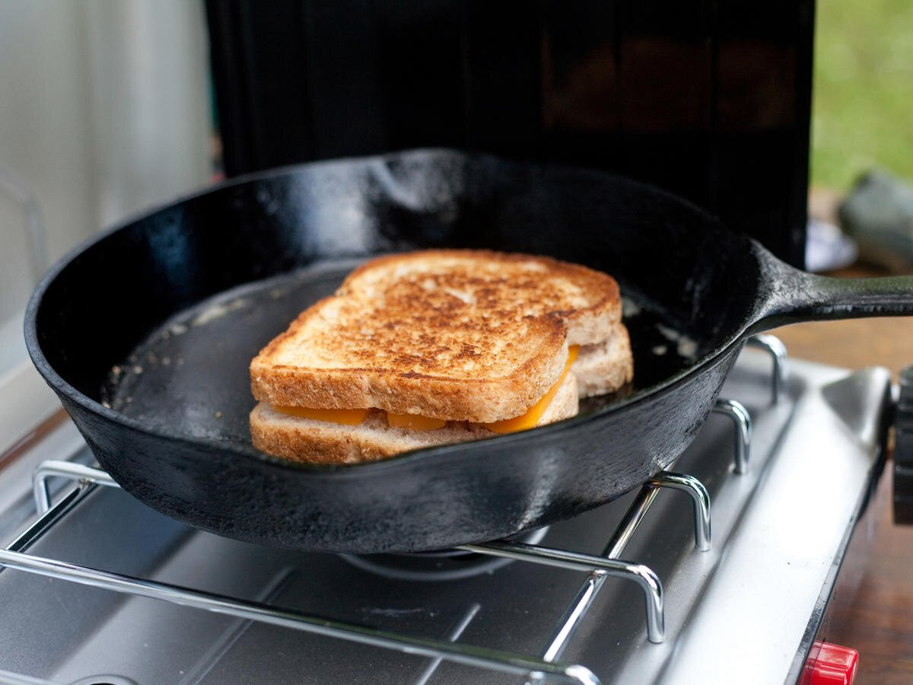

Hello! This is a 5 step recipe on how to make a grilled cheese sandwich! The grilled cheese sandwich is the perfect sandiwch in both taste and simplicty! We hope you use this simple guide in order to make your own grilled cheese soon! Some of these steps have fun aspects to them on the website so please press the buttons on the top of the screen to make them work!
Get two slices of bread, two tablespoons of butter, and three slices of
cheese to your liking.

Butter the bread with a butter knife and then put the cheese between the
two slices of bread.

Press the Step 3 button!

Place the sandwich on the pan and let cook for 3-5 minutes on each side.

Turn off the heat and using a spatula, place the completed sandwich on a
plate, cut in half, and enjoy!